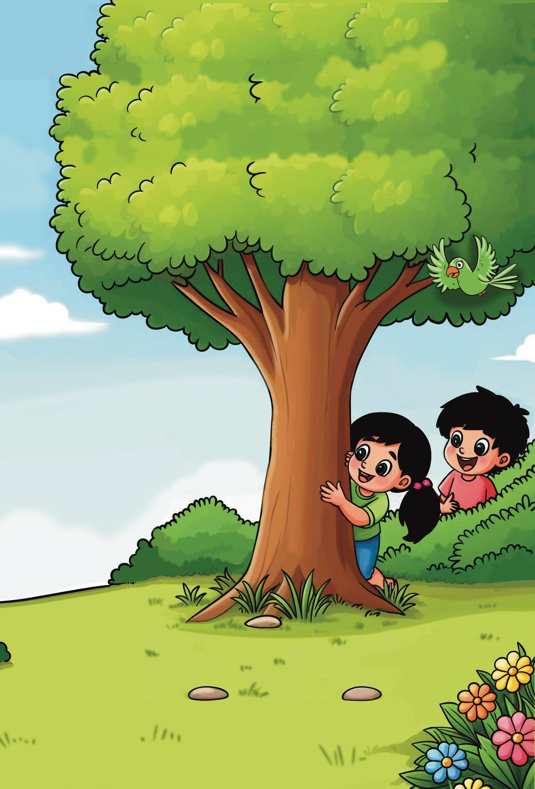
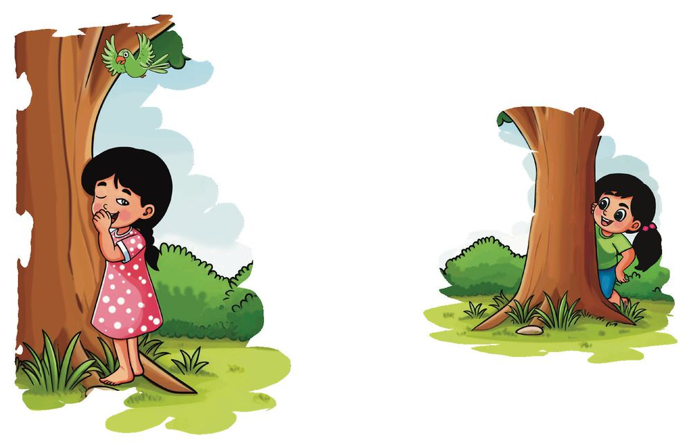
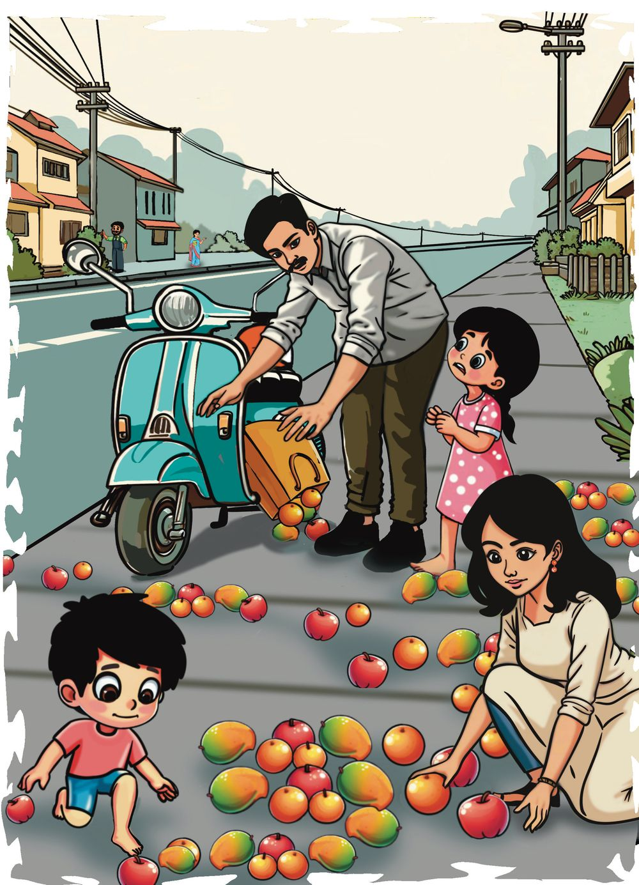
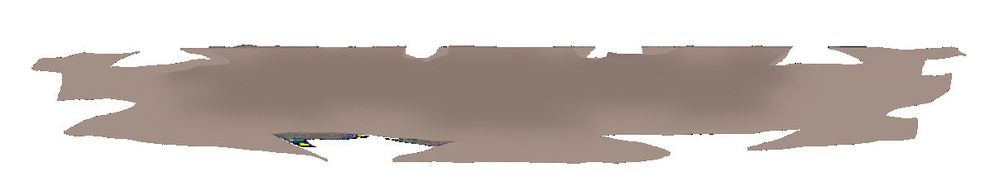

നിയേ 50 വരെ എണ്ണിക്കോോ...
ഇന്ന് നമുക്ക് ഒളിച്ചുകളിക്കാം.
22
ഗണിതം 2
സ്റ്റാൻഡേർഡ്


നിയേ 50 വരെ എണ്ണിക്കോോ...
ഇന്ന് നമുക്ക് ഒളിച്ചുകളിക്കാം.
22
ഗണിതം 2
സ്റ്റാൻഡേർഡ്



2
ഒളിച്ചേ... കണ്ടേ...
2
യൂണിറ്റ്
നിയയുടെ വീട്ടുവളപ്പിൽ നിറയെ മരങ്ങൾ. നല്ല തണലും തണുപ്പുമുണ്ട്.
ഇവിടെ ഒളിക്കാം.
ഒളിച്ചേ... കണ്ടേ...
23



എണ്ണിക്കളിക്കാം. 13, 14, 15, 16, 27, 28, 29, 30
ചിലത് വിട്ടു പോോയല്ലോോ.
നിയ എണ്ണാൻ വിട്ടുപോോയ സംഖ്യയകൾ ഇവിടെ എഴുതൂ.
നിയ ആദ്യംം ജാൻവിയെ കണ്ടു. ഇനി, ഞാനെണ്ണാം...
ജാൻവി എണ്ണിയത് 30 മുതലാണ്. ജാൻവി എണ്ണിയ തുടർച്ചയായ പത്തു സംഖ്യയകൾ എഴുതൂ.
കൂട്ടുകാരോോടൊൊപ്പം നിങ്ങളുംം കളിക്കൂ. 24
ഗണിതം 2
സ്റ്റാൻഡേർഡ്


കളിക്കുന്നതിനിടയിൽ വഴിയിൽ പെട്ടെന്നൊൊരു ശബ്ദം.
സാരമില്ല, കൈതട്ടി വീണതാ. അയ്യോോ... സാബുവേട്ടൻ.
ഞങ്ങളുംം സഹായിക്കാം.
2
യൂണിറ്റ്
അവർ പഴങ്ങൾ സഞ്ചിയിലാക്കി. ഓരോോ ഇനവും നിയ എണ്ണിനോോക്കി. ഒളിച്ചേ... കണ്ടേ...
25


ഓരോോന്നും എത്രയുണ്ട്? ആപ്പിൾ
മാങ്ങ
ഓറഞ്ച്
മാങ്ങയും ഓറഞ്ചും മുഴുവൻ കിട്ടി. ആകെ 45 ആപ്പിൾ ഉണ്ടായിരുന്നു. പക്ഷെ എല്ലാം കിട്ടിയില്ല. ഇനി എത്ര ആപ്പിൾ കിട്ടാനുണ്ട്? കൂടുതലുള്ള എണ്ണം ഏതാണ്? കുറവ് എണ്ണമോോ? ഓറഞ്ചിനേക്കാൾ എത്ര കൂടുതൽ ആപ്പിൾ ഉണ്ട്? 26
ഗണിതം 2
സ്റ്റാൻഡേർഡ്


സംഖ്യയകളി സോോഹനും നിയയും സംഖ്യയകളി തുടങ്ങി.
ഒന്നാമത്തെ കളിയിൽ സോോഹന് 40 പോോയിന്റ് കിട്ടി. നിയയ്ക്ക് അതിനെക്കാൾ 7 പോോയിന്റ് കൂടുതൽ കിട്ടി. നിയയ്ക്ക് കിട്ടിയത് എത്ര?
40 നെക്കാൾ 7 കൂടുതൽ.
രണ്ടാമത്തെ കളിയിൽ നിയയ്ക്ക് 44 പോോയിന്റ് കിട്ടി. സോോഹന് അതിനെക്കാൾ 14 പോോയിന്റ് കുറവാണ് കിട്ടിയത്. സോോഹന് കിട്ടിയത് എത്ര? 44 നെക്കാൾ 14 കുറവ്.
മൂന്നാമത്തെ കളിയിൽ സോോഹനും നിയയ്ക്കും കൂടി കിട്ടിയ പോോയിന്റ് 50 ൽ കുറവാണ്. അവരുടെ പോോയിന്റുകൾ തമ്മിലുള്ള വ്യയത്യാസം 10. ഓരോോരുത്തരുടെയും പോോയിന്റുകൾ എത്രയാകാം? സോോഹൻ 2
യൂണിറ്റ്
നിയ
ഒളിച്ചേ... കണ്ടേ...
27

ക്ലാസ് അലങ്കരിക്കാം. നിയയും സോോഹനും ക്ലാസ് അലങ്കരിക്കാൻ വർണ്ണക്കടലാസിൽ പല രൂപങ്ങൾ മുറിച്ചു.
ഞാൻ ഉണ്ടാക്കിയത് കണ്ടോോ? നക്ഷത്രങ്ങൾ.
മുറിച്ചെടുത്തവ രണ്ടുപേരുംം നിരത്തിവച്ചു. ന് 10 പോോയിന്റ്.
ന് 1 പോോയിന്റ്.
ഓരോോരുത്തർക്കും എത്ര പോോയിന്റ് കിട്ടി? നിയ
+
=
സോോഹൻ
+
=
ആർക്കാണ് കൂടുതൽ?
എത്ര?
ഒപ്പം എത്താൻ സോോഹൻ ഓരോോ രൂപവും എത്രയെണ്ണം മുറിക്കണം? രൂപങ്ങൾ മുറിച്ചെടുത്ത് ഇതുപോോലെ കളിക്കാമല്ലോോ. 28
ഗണിതം 2
സ്റ്റാൻഡേർഡ്


എത്ര വയസ്സായി?
അമ്മയ്ക്ക് എത്ര വയസ്സായി? അച്ഛന് എത്ര വയ സ്സായി?
അമ്മയെക്കാൾ 5 കൂടുതൽ
40
വയസ്സ്.
അച്ഛന്റെ വയസ്സ് എത്രയാണ്? മിഹാലിന് 3 വയസ്സ്, അതിന്റെ ഇരട്ടിയാണ് നിയയുടെ വയസ്സ്.
2
യൂണിറ്റ്
നിയയുടെ വയസ്സ് എത്രയാണ്? ഒളിച്ചേ... കണ്ടേ...
29



ഇനിയും അഞ്ച് വർഷം കഴിയുമ്പോോൾ ഓരോോരുത്തരുടെയും വയസ്സ് എത്രയാകും? അമ്മ : അച്ഛൻ : നിയ : മിഹാൽ :
40 നെക്കാൾ 5 കൂടുതൽ - 45
.................................................................. .................................................................. ..................................................................
ഇപ്പോോഴുംം അച്ഛന്റെ വയസ്സ് അമ്മയേക്കാൾ 5 കൂടുതൽ തന്നെ.
ഇപ്പോോൾ നിയയുടെ വയസ്സ് മിഹാലിന്റെ ഇരട്ടിയല്ലല്ലോോ.
നിങ്ങളുടെ വീട്ടിലുള്ളവരുടെ വയസ്സ് എഴുതൂ. പേര്
30
ഗണിതം 2
സ്റ്റാൻഡേർഡ്
വയസ്സ്

കമ്പ്യൂട്ടർ ഗെയിം
1
2
3
4
5
6
7
8
9
10
14 15 16 21 31 32
23
25 26 27 28 29 30 34 35
37
39 40
കമ്പ്യൂട്ടറിൽ കളിക്കുകയാണ് നിയ. ചില സംഖ്യയകൾ വിട്ടുപോോയി. 23 കഴിഞ്ഞ് തൊൊട്ടടുത്ത സംഖ്യയ എന്താണ്? 15 ന്റെ തൊൊട്ടുമുമ്പുള്ള സംഖ്യയ എന്താണ്? 29 ന്റെ മുകളിലെ സംഖ്യയ എന്താണ്? 39 ന്റെ താഴെയുള്ള സംഖ്യയ എന്താണ്? 13, 33, 36, 46, 49 എന്നിവ കമ്പ്യൂട്ടറിൽ
ശരിയായ കളങ്ങളിൽ എഴുതുക. കമ്പ്യൂട്ടറിലെ ഏതാനും കളങ്ങളാണ് ചുവടെയുള്ളത്. ഒഴിഞ്ഞ കളങ്ങളിലെ സംഖ്യയകൾ എഴുതൂ. 23
29
28 25
2
യൂണിറ്റ്
35
ഒളിച്ചേ... കണ്ടേ...
31


നിയയും കൂട്ടുകാരുംം കാർഡ് കളിക്കുകയാണ്. കൂട്ടുകാർ ജോോടിയായത് നോോക്കൂ. മറ്റുള്ളവരെയും ചേർത്ത് വരയ്ക്കൂ. 30
നാല്പത്തിയൊൊമ്പത്
49
മുപ്പത്
18
ഇരുപത്തിയൊൊന്ന്
21
മുപ്പത്തിയേഴ്
37
പതിനെട്ട്
ഓരോോരുത്തർക്കും കിട്ടിയ സംഖ്യയകൾ കാർഡിൽ എഴുതൂ.
അവയെ ചെറുതിൽ നിന്ന് വലുതിലേയ്ക്ക് എഴുതൂ.
32
ഗണിതം 2
സ്റ്റാൻഡേർഡ്

ജോോടിയാക്കൂ. ഒരേ സംഖ്യയകളെ ചേർത്ത് വരയ്ക്കൂ. 28 ഒന്നുകൾ.
4 പത്തും 6 ഒന്നും.
3 പത്തും
ഒരു ഒന്നും.
മുപ്പത്തിയൊൊന്ന് ഒന്നുകൾ.
4 പത്തും 4 ഒന്നും.
ഒരു പത്തും ഒരു ഒമ്പതും.
40 ഒന്നുകൾ.
2 പത്തും 8 ഒന്നും.
46 ഒന്നുകൾ.
നാല്പത്തിനാല് ഒന്നുകൾ.
19 ഒന്നുകൾ.
2
യൂണിറ്റ്
4 പത്തുകൾ.
ഒളിച്ചേ... കണ്ടേ...
33

കൂട്ടങ്ങളാക്കാം. ഒരേ സംഖ്യയയുള്ള കാർഡെടുത്തവർ ഒരു കൂട്ടമായി. 20 ഉം 16 ഉം.
നാല്പത്തി എട്ട്.
ഇരുപത്തിയഞ്ച്. 50 നെക്കാൾ 2 കുറവ്.
40
36
നാല് പത്തും 8 ഒന്നും.
നാല് പത്ത്.
25
നാല്പത്.
ഇരുപതും അഞ്ചും.
10 ഉം 15 ഉം.
34
ഗണിതം 2
സ്റ്റാൻഡേർഡ്

30 ഉം 6 ഉം
ഇരുപതിനോോട് ഇരുപത് ചേർന്നത്.
48
മുപ്പത്തിയാറ്.
കൂട്ടങ്ങളെ കണ്ടെത്തി എഴുതൂ. കൂട്ടം - ഒന്ന്
കൂട്ടം - രണ്ട്
കൂട്ടം - മൂന്ന്
കൂട്ടം - നാല്
ഇവയിൽ ഏറ്റവും വലിയ സംഖ്യയയേത്?
2
യൂണിറ്റ്
എറ്റവും ചെറിയ സംഖ്യയയേത്? ഒളിച്ചേ... കണ്ടേ...
35